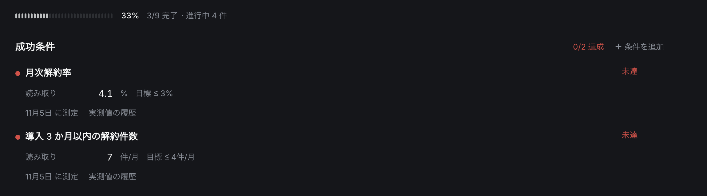
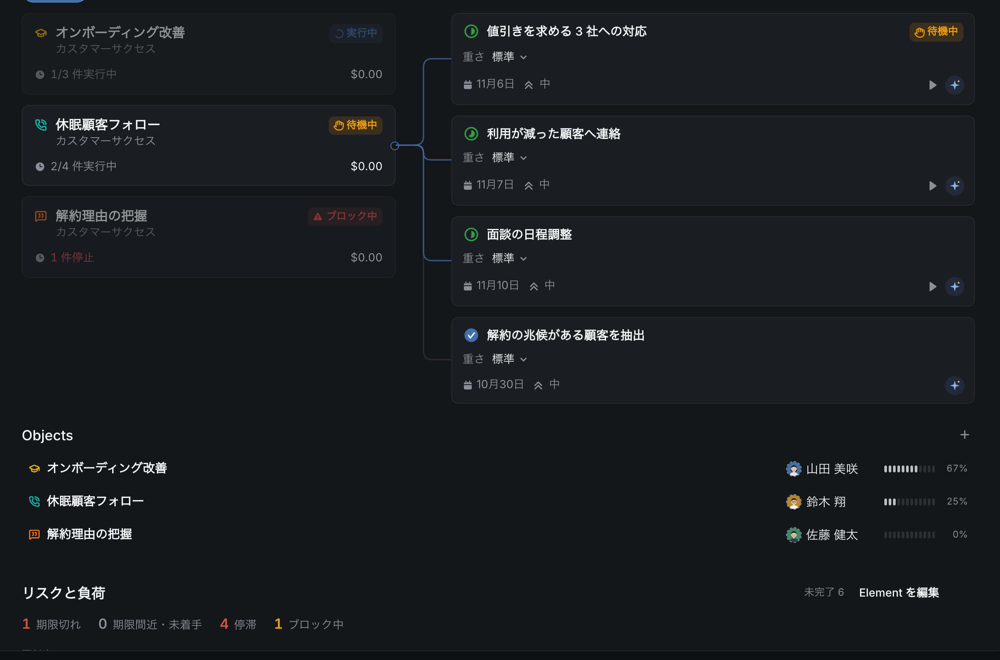

機能
方針・仕事・記録を、
ひとつの場所に。
Alcon の中心にあるのは四つです。方針を実行できる仕事に分けること、仕事を管理すること、決めたことを文書に残すこと、そして仕事を AI に実行させる AIP です。
01 — 方針を実行に
曖昧な方針から、
やるべき仕事へ。
「お客さまに、もっと長く使ってもらう」。そんなぼんやりした方針でも構いません。AI が背景と前提を整理し、仕事のまとまりと一つひとつの仕事に分けて下書きします。
- 前提から確かめる「増えている気がする」のような思い込みは、最初に確かめる仕事として入ります。
- 順番と担当までどの仕事が先か、人がやるか AI がやるかまで下書きに入ります。
- 人が確かめてから作る下書きは「作成」を押すまで作られません。補足を書いてやり直せます。

「お客さまに、もっと長く使ってもらう」を AI が分けた下書き。3 つのまとまりに 10 件の仕事が提案されている。

方針には「成功したと言える数字」を置けます。いまの値が目標に届いていなければ赤く出ます。
02 — タスク管理
誰が、いつまでに、
どこまで。
仕事は担当・期限・状態つきで、まとまりごとに並びます。どの仕事も、何の方針のためにあるかが必ず分かります。
- まとまりごとに一覧「休眠顧客フォロー」のような単位で、仕事と担当・期限を見渡せます。
- 止まった仕事が目立つブロック中・期限切れは方針の画面にも出るので、聞いて回らずに気づけます。
- 人と AI が同じ一覧にAI に任せた仕事も、人の仕事と同じように担当として並びます。



左：方針から見た仕事の状態。右：仕事のまとまりから見た、貢献している方針とその理由。
03 — ドキュメント
議事録も資料も、
仕事の隣に。
定例のメモ、質問票、報告のスライド、集計の表。別のツールに分けず、同じ場所で書いて、仕事とつなげておけます。
- ノート見出し・箇条書き・表・リンクで書ける文書。プロジェクトごとにまとめられます。
- 表とスライド集計の表や報告のスライドも、同じワークスペースで作れます。
- 決めた理由が残る方針には「なぜ」と「前提」を書く場所があり、担当が変わっても消えません。

04 — AIP（AI Platform）
任せた仕事を、
AI が最後まで実行する。
AIP は、仕事（Element）を AI に実行させる仕組みです。AI は方針を読んで作業し、外部に影響する操作は人の承認を待ってから行います。何をしたかはすべて仕事に記録されます。
- 01
任せる
仕事の担当に AI を選びます。AI は仕事の説明と、その仕事が属する方針の目的・成功条件・関連する表を読みます。
- 02
作業する
連携したサービス、作業用の仮想マシン（コマンド・ファイル・ブラウザ）、任せた人の PC のブラウザを使います。
- 03
承認を待つ
メールの送信やファイルの書き込みなど、外部に影響する操作の前で止まり、「あなたの番」に承認依頼を出します。
- 04
確かめて記録する
別の AI が、成功条件と成果物を照らして完了かどうかを判定します。報告・ファイル・操作の記録が仕事に残ります。
- 任せた人の権限で動くAI が読み書きできるのは、任せた人が読み書きできるデータだけです。
- 連携先の操作を絞れる連携したサービスごとに AI が使える操作が決まっていて、操作ごとに承認が必要かを設定できます。
- 使う金額に上限1 回の実行で使える金額に上限があり、Space ごとに月の上限も決められます。
- 仕事の重さでモデルを選ぶ軽い・標準・重いの見積もりに合わせて、使う AI モデルを選びます。
- 進め方を書いておける目的・条件・止める条件・点検項目・成果物の形式を書いた「定義」を渡すと、AI はそれに従って作業します。
- 次の仕事も自動で方針で「自動」を選ぶと、AI の仕事が終わったときに、それを待っていた次の AI の仕事が始まります。

「あなたの番」。AI の結果を毎回人が確認するか、自動で次へ進めるかは方針ごとに選べます。